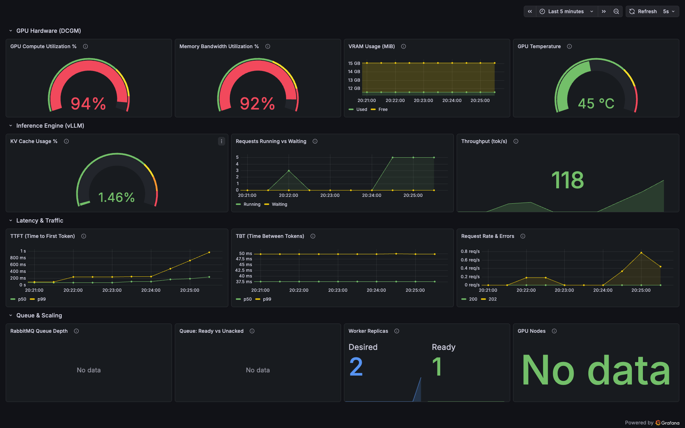
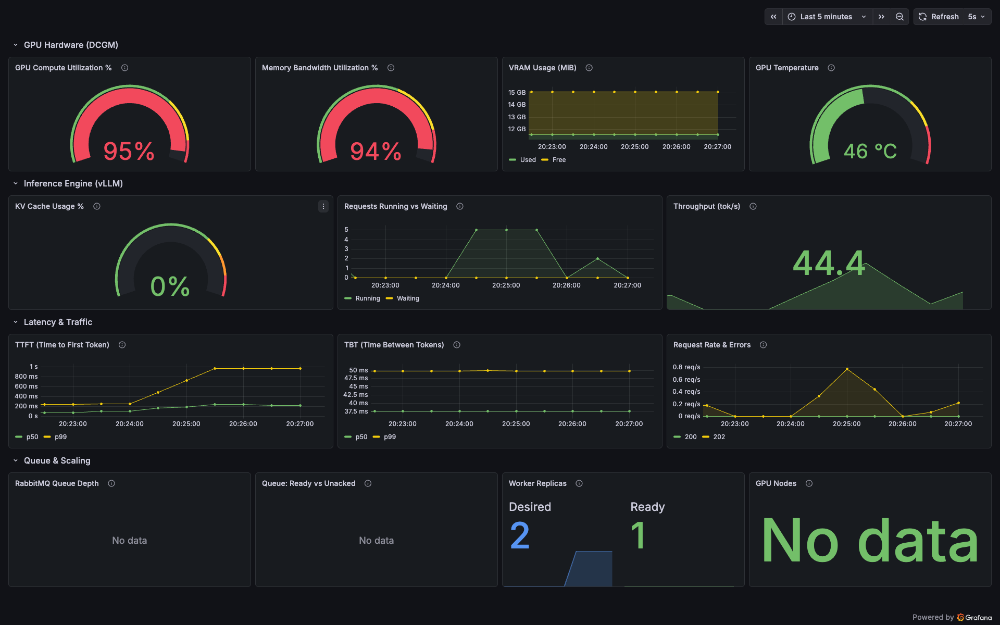
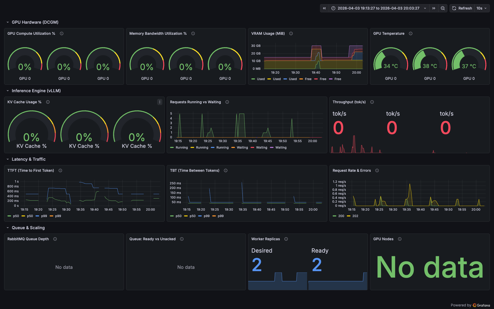
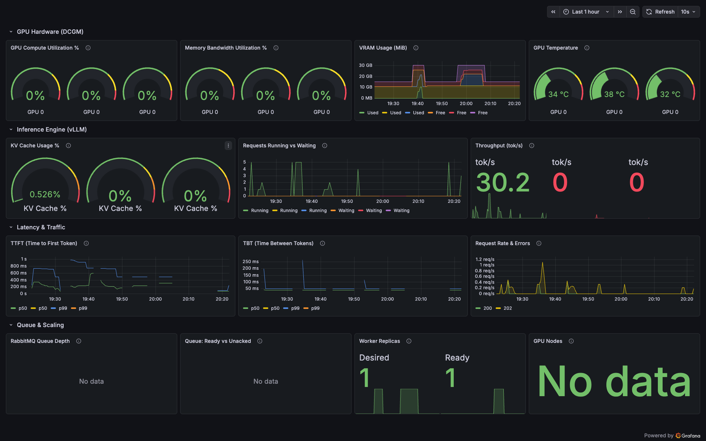

Phase 2 — Observability + GPU Autoscaling
Prometheus + Grafana + DCGM + KEDA on EKS • Qwen2.5-7B-AWQ on NVIDIA T4 (g4dn.xlarge Spot) • 2026-04-04
What Is This Experiment?
Phase 1 proved the queue architecture works: requests flow through RabbitMQ, the GPU processes 5 at a time, and the queue absorbs burst overflow. At N=15, the last request waited 12 seconds in the queue. That's the scaling signal — but nothing was watching it.
Phase 2 adds two capabilities:
Eyes — Observability
- Prometheus scrapes metrics from vLLM, RabbitMQ, API gateway, and GPU hardware (DCGM)
- Grafana dashboard with 14 panels across 4 rows: GPU hardware, inference engine, latency, queue & scaling
- You can see KV cache pressure, memory bandwidth saturation, token throughput, and queue depth in real-time
Muscles — Autoscaling
- KEDA watches RabbitMQ queue depth via AMQP
- When queue_depth > 5 (= prefetch slots full), KEDA sets replicas: 2
- Karpenter provisions a new GPU Spot node for the second worker
- Both workers drain the queue in parallel, halving wait times
The AWS analogy: Prometheus = CloudWatch. Grafana = CloudWatch Dashboards. KEDA = ASG scaling policy watching SQS queue depth. Karpenter = ASG launching a new EC2 instance from a launch template. The only difference: GPU autoscaling takes ~5 minutes instead of ~90 seconds because you have to download and load a 4GB neural network into GPU VRAM.
The questions this experiment answers:
- How much does a second GPU worker reduce queue wait time?
- How long does GPU autoscaling actually take, and where does the time go?
- What does the GPU hardware look like under sustained inference load?
What Was Deployed
Prometheus
scrapes every 15s
←
4 ServiceMonitors
vLLM, RabbitMQ, Gateway, DCGM
→
Grafana
14-panel dashboard
RabbitMQ queue_depth
polled via AMQP every 15s
→
KEDA ScaledObject
if depth > 5 → replicas++
→
Karpenter
provisions GPU Spot node
→
2nd vLLM Worker
model loads, starts consuming
Headline Numbers
Queue Wait — 1 Worker (N=15)
16.8sec
Last request waited 16.8s for a worker slot
Queue Wait — 2 Workers (N=15)
1.7sec
90% reduction — target of <2s met
Scale-Up Latency
~5min
Pending → Ready (70% model-related)
Peak GPU Compute
95%
SMs near-fully saturated under N=20 load
Peak Memory Bandwidth
94%
Near T4's 320 GB/s limit — decode bottleneck confirmed
Peak Batched Throughput
118tok/s
3.6x single-request throughput (33 tok/s)
Grafana Dashboard — GPU Under Sustained Load
These screenshots are from the live Grafana dashboard during sustained inference load (20 concurrent heavy requests). The dashboard has 4 rows: GPU Hardware (DCGM), Inference Engine (vLLM), Latency & Traffic (gateway), Queue & Scaling (KEDA).
Peak Load — The Money Shot

GPU Compute 94%, Memory Bandwidth 92%, KV Cache 1.46%, 5 requests running, 118 tok/s throughput, KEDA triggered (Desired=2, Ready=1). Temperature at 45°C (well below T4's 83°C throttle).
Why are GPU Compute (94%) and Memory Bandwidth (92%) both high at the same time? With 5 requests in-flight under continuous batching, vLLM interleaves prefill and decode steps in the same batch. Some requests are in prefill (compute-heavy — matrix multiplications to process input tokens), while others are in decode (memory-bandwidth-heavy — reading the full model weights + KV cache to generate one token). The GPU is simultaneously doing both types of work, saturating both resources. This is actually the optimal state — it means the GPU has no idle capacity whatsoever.
Memory Bandwidth at 92% confirms decode is the bottleneck. The T4 has 320 GB/s memory bandwidth. With a 4GB AWQ model, each decode step reads the full model weights (~4GB) plus all KV caches for in-flight requests. At 5 concurrent requests with ~200MB KV each: (4GB + 5×0.2GB) × 33 decode steps/sec = ~165 GB/s just for one request stream. With 5 batched, the model weights are read once but KV reads multiply — pushing bandwidth to the physical limit. This is why inference throughput doesn't scale linearly with batch size: more concurrent requests = more KV cache reads = more bandwidth consumed per decode step.
Post-Burst — Scale-Up Triggered

GPU Compute 95%, Memory Bandwidth 94%, Temperature climbing to 46°C. Worker Replicas showing Desired=2, Ready=1 — KEDA has triggered scale-up, Karpenter is provisioning a second GPU Spot node.
Dashboard During Test Window (Historical)

50-minute window covering all test phases. Time axis runs from ~19:13 to ~20:03 local time.
Reading this graph left to right:
~19:20 — Baseline N=5 test. First small spike in "Requests Running" to ~3. TTFT shows a brief blip. Request Rate shows a tiny bump. This is 5 requests flowing through with near-zero queue wait — all within the prefetch window.
~19:25 — N=15 burst (single worker). Requests Running spikes to 5 and holds for several seconds (worker saturated, processing batches). TTFT chart shows the p99 line jumping to ~800ms-1s as later requests queue. The sustained flat-top in Requests Running = GPU continuously busy processing the 15-request queue in batches of 5.
~19:30-19:45 — Sustained load + second N=15 run. Repeated spikes in Requests Running. Request Rate shows the most activity here — multiple test rounds firing. This is where KEDA eventually detected the queue depth and triggered scale-up.
~19:35 — KEDA scale-up triggered. Worker Replicas panel (bottom row) shows Desired jumping from 1 to 2. But Ready stays at 1 — the second worker is still being provisioned (Spot node launching, model downloading). The ~5 min gap between Desired=2 and Ready=2 is the scale-up delay.
~19:40 — Second worker ready. Worker Replicas shows both Desired=2 and Ready=2. VRAM chart now shows two traces for "Used" — each GPU node's VRAM independently tracked. This is also where the second DCGM Exporter pod started (DaemonSet auto-deployed to new GPU node).
~19:50 — Scale-down. Load stops, queue drains, KEDA cooldown expires. Worker Replicas drops back to Desired=1, Ready=1. The second VRAM trace disappears as the GPU node is consolidated by Karpenter.
Key pattern to notice: The TTFT chart shows spikes correlating exactly with the Requests Running flat-tops. When the GPU is saturated at 5 concurrent, new requests wait in the queue — that queue wait becomes TTFT latency. After scale-up, the same load produces shorter TTFT spikes because two workers share the queue.
Light Load — Baseline State

N=8 burst: KV Cache 0.526%, throughput 30.2 tok/s, TTFT p99 visible on the latency chart. GPU Compute and Memory BW at 0% — DCGM polls every few seconds and the burst was too brief to register.
Test 1: Baseline — N=5 Concurrent (1 Worker)
Validates that Phase 2 changes (patched RabbitMQ, v2 API gateway, monitoring stack) didn't regress performance. Same 5-request mixed test from Phase 1.
| Type | Count | Queue Wait Max | TTFT p50 | Throughput |
|---|
| Short | 2 | 2.6ms | 666ms | 33.2 tok/s |
| Medium | 2 | 4.8ms | 636ms | 32.7 tok/s |
| Long | 1 | 4.9ms | 634ms | 33.3 tok/s |
No regression. Queue wait <5ms, throughput ~33 tok/s — identical to Phase 1. The added monitoring stack (Prometheus, Grafana, DCGM, 4 ServiceMonitors) adds zero measurable overhead to the inference path. The ~500ms client TTFT is kubectl port-forward latency, not queue or GPU latency.
Test 2: Queue Saturation — N=15 Concurrent (1 Worker)
The scaling signal: 15 requests with only 5 prefetch slots = requests 6-15 queue. This is the "before" measurement for the autoscaling comparison.
| Type | Count | Queue Wait p50 | Queue Wait Max | TTFT p50 | TTFT Max | Throughput |
|---|
| Short | 5 | 5.2ms | 16,798ms | 542ms | 17,111ms | 32.7 tok/s |
| Medium | 5 | 846ms | 13,089ms | 1,619ms | 13,449ms | 27.9 tok/s |
| Long | 5 | 5,957ms | 7,001ms | 6,623ms | 7,669ms | 28.7 tok/s |
Queue Wait Distribution — 1 Worker at N=15
Batch 1 (instant — within prefetch)
Batch 3
5,957 - 16,798 ms
16.8 seconds of queue wait. The last short request waited nearly 17 seconds because it happened to enqueue after all prefetch slots were occupied by long-running requests. With prefetch_count=5, the worker holds 5 messages at a time. Requests 6-15 sit in RabbitMQ until a slot frees up. Short requests recycle slots in ~1s, but long requests hold them for ~10s — so the tail of the queue grows fast when dominated by longs.
Test 3: Autoscaled — N=15 Concurrent (2 Workers)
After KEDA scaled to 2 workers on 2 GPU nodes, the same N=15 test. Each worker has its own prefetch_count=5, giving 10 total slots.
| Type | Count | Queue Wait p50 | Queue Wait Max | TTFT p50 | Throughput |
|---|
| Short | 5 | 6.0ms | 824ms | 595ms | 33.3 tok/s |
| Medium | 5 | 824ms | 1,722ms | 1,395ms | 30.7 tok/s |
| Long | 5 | 5.6ms | 824ms | 713ms | 31.5 tok/s |
Queue Wait Distribution — 2 Workers at N=15
Batch 1 (instant — 10 prefetch slots cover most requests)
Overflow (~0.8-1.7s wait)
Target met: 1,722ms max queue wait (down from 16,798ms = 90% reduction). With 2 workers, RabbitMQ distributes messages round-robin. Each worker's prefetch window covers 5 requests = 10 total slots for 15 requests. Only 5 requests need to wait, and they wait for much less time because two GPUs are draining the queue concurrently.
Side-by-Side: 1 Worker vs 2 Workers
| Metric | 1 Worker | 2 Workers | Change |
|---|
| Short queue_wait max |
16,798ms |
824ms |
-95% |
| Medium queue_wait max |
13,089ms |
1,722ms |
-87% |
| Long queue_wait max |
7,001ms |
824ms |
-88% |
| Overall max queue_wait |
16,798ms |
1,722ms |
-90% |
| Throughput per worker |
~33 tok/s |
~33 tok/s |
Same |
| Total system throughput |
~33 tok/s |
~66 tok/s |
2x |
Why is the improvement better than 2x? You might expect 2 workers to halve the max wait from 16.8s to ~8.4s. Instead it dropped to 1.7s — a 10x improvement. The reason is non-linear: with 1 worker, the 10th request must wait for 5 requests to fully complete before it gets a slot. With 2 workers, the 11th request only needs to wait for 1 request to complete on either worker (whichever frees a slot first). The wait time is determined by the minimum of two completion times, not the average — that's the power of parallel queuing. Same reason having 2 cashier lanes doesn't just halve the average wait — it collapses the tail.
GPU Hardware Metrics Under Sustained Load
Captured via DCGM Exporter during N=20 sustained heavy inference. These numbers are from the Grafana dashboard (screenshot 06).
GPU Compute
95%
SMs near-fully saturated
Memory Bandwidth
94%
Near 320 GB/s limit
VRAM Used
14GB / 16GB
4GB model + KV cache + overhead
Temperature
46°C
Well below 83°C throttle point
KV Cache Usage
1.66%
AWQ 7B uses minimal KV per request
Batched Throughput
118tok/s
3.6x single-request (33 tok/s)
Why 118 tok/s with batch=5, but only 33 tok/s with batch=1? vLLM's continuous batching processes all in-flight requests in a single GPU pass. The model weights (4GB) are read from VRAM once per decode step regardless of batch size. With 1 request, each weight-read produces 1 token. With 5 requests, the same weight-read produces 5 tokens — one for each request's KV cache. The cost of reading weights is amortized across the batch. Throughput scales sub-linearly (not 5x = 165 tok/s) because KV cache reads scale linearly with batch size, consuming more of the finite memory bandwidth.
VRAM 14/16GB used but KV cache only 1.66% — how? These measure different things. VRAM (from DCGM) is total GPU framebuffer: 4GB model weights + ~10GB KV cache pool pre-allocated by vLLM at startup + 0.5GB CUDA runtime. The KV cache pool is allocated in full when vLLM starts (gpu_memory_utilization=0.85 = "grab 85% of 16GB"), but it's mostly empty — like a parking garage that reserves 1000 spots at startup but only has 5 cars parked. The 1.66% means only ~165MB of the 10GB pool is holding actual request KV data (5 requests × ~33MB each). The 80% admission threshold would allow ~40 concurrent requests before rejecting — meaning for this model size on T4, the queue limits concurrency (prefetch_count=5), not GPU memory. A 13B+ model or 8K+ context lengths would flip this.
GPU Scale-Up Delay Breakdown
The most important learning from Phase 2: GPU autoscaling takes ~5 minutes. This is fundamentally different from CPU autoscaling (~60-90s) because you're not just starting a process — you're downloading and loading a neural network into GPU VRAM.
Phase
Duration
0s60s120s180s240s300s
Cumulative
KEDA detects queue > 5
15s
15s
Karpenter selects Spot
15s
30s
EC2 Spot launch + boot
60s
90s
Node joins cluster (kubelet)
10s
100s
vLLM image pull (~8GB)
90s
190s
Model download (4GB HF)
60s
250s
Model load into VRAM
50s
300s
70% of scale-up time is model-related. The infrastructure (Spot launch + node join) takes ~85s — competitive with CPU autoscaling. But then you spend another ~200s pulling the 8GB vLLM container image, downloading the 4GB model from HuggingFace, and loading it into GPU VRAM. This is the fundamental challenge of GPU autoscaling: your "application startup" includes loading a neural network. Three production optimizations could cut this from 300s to ~60s:
| Optimization | Saves | How |
|---|
| Pre-baked AMI with vLLM image |
~90s |
Container image cached on the AMI — no ECR pull on startup |
| S3 model cache + init container |
~60s |
Model pre-downloaded to S3, init container copies to local NVMe — no HuggingFace download |
| Warm standby node pool |
~240s |
Keep 1 idle GPU node with model loaded — scale from warm, not cold. Drops to ~10s. |
Key Learnings
KEDA needs sustained load, not bursts. A burst of 15 requests drains within 20-30s. KEDA polls queue depth every 15s and may miss a transient spike entirely. Only sustained load (2+ req/s for 60s+) keeps the queue above threshold long enough for KEDA to detect it and trigger scale-up. In production, this is actually the right behavior — you don't want to spin up a $0.22/hr GPU for a 20-second burst. The queue absorbs bursts; autoscaling handles sustained demand shifts. Same design philosophy as ASG cooldown periods preventing thrashing on traffic spikes.
Cooldown period must exceed scale-up latency. With cooldownPeriod: 60s (initial config), KEDA scaled the worker back down before it even finished loading the model. The queue drained within 30s of the burst ending, and 60s later KEDA killed the new worker that was still downloading weights. Setting cooldown to 180s gives the full 5-min scale-up cycle enough time to complete and prove its value before scaling back down. In production, you'd set this to at least 2x your scale-up latency.
DCGM Exporter needs /dev/nvidia* device mounts. DCGM reads GPU hardware counters through NVIDIA's kernel driver device files. Without mounting /dev/nvidia0, /dev/nvidiactl, and /dev/nvidia-uvm, the exporter container starts but reports 0% for all utilization metrics. This is the same privilege level as the NVIDIA device plugin DaemonSet — both need direct hardware access.
Prometheus retentionSize format is 5GB not 5Gi. Kubernetes uses binary suffixes (Gi, Mi) but Prometheus uses SI suffixes with a mandatory B suffix (GB, MB). 5Gi fails Prometheus CRD validation. Small gotcha, 2 minutes to fix, but would block a deploy pipeline.
Grafana dashboard sidecar only watches its own namespace by default. Our dashboard ConfigMap was in inference-system but the Grafana sidecar watches monitoring namespace. Either set searchNamespace: ALL in Helm values or create the ConfigMap in the monitoring namespace. We chose the latter since it's simpler and the dashboard is an ops artifact, not an application one.
Phase 2 Architecture
Monitoring Namespace inference-system Namespace
┌─────────────────────┐ ┌────────────────────────────────────┐
│ Prometheus │ ── scrape/15s ──► │ vLLM /metrics (port 8000) │
│ 3d retention │ ── scrape/15s ──► │ RabbitMQ /metrics (port 15692) │
│ 10GB storage │ ── scrape/15s ──► │ API Gateway /metrics (port 8080) │
│ │ ── scrape/15s ──► │ DCGM Exporter /metrics (port 9400)│
└────────┬────────────┘ └────────────────────────────────────┘
│
▼
┌─────────────────────┐
│ Grafana │ KEDA Namespace
│ 14-panel dashboard │
│ admin/inference-lab│ ┌──────────────────────────┐
│ :3000 (port-fwd) │ │ KEDA Operator │
└─────────────────────┘ │ polls RabbitMQ/AMQP │
│ queue_depth > 5 → │
│ set replicas: 2 │
└──────────┬───────────────┘
│
▼
┌──────────────────────────┐
│ Karpenter │
│ provisions g4dn.xlarge │
│ Spot in us-east-1a/1b │
└──────────────────────────┘
Generated from phase2/tests/autoscale_results.json • Screenshots in phase2/screenshots/ • Phase 2: EKS 1.29 + Karpenter v0.34 + KEDA 2.19 + kube-prometheus-stack • 2026-04-04